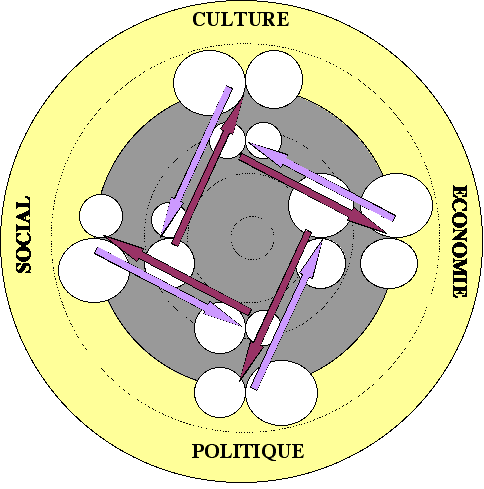
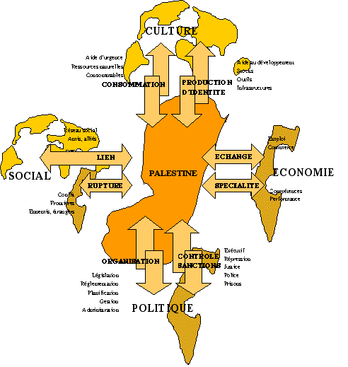

Pour obtenir plus d'information concernant l'étude de votre système dans le but de produire un trableau de bord, qui vous permettera de pilotez votre système, veuillez nous contacter à l'adresse suivante:
Afin de piloter les systèmes, nous pouvons présenter les résultats des analyses issues de la comptabilité complexe, de manière schématiques. Il est ainsi possible de voir rapidement l'influence des modifications internes et externes, à travers les relations dynamiques qui existent. Nous pouvons appliquer cette méthode de pilotage à une entreprise, un état, un parti politique, une association, ainsi qu'à un conflit, une croyance, ....
Le tableau de bord se visualise de la mnière suivante:
Le tableau de bord est construit à partir des informations du tableau ci-dessous :
SYSTEME INTERNE |
||||||||||||||||||||
CAPITAUX |
FLUX |
|||||||||||||||||||
Valeur |
Centration |
Valeur |
Centration |
|||||||||||||||||
| var | var | R |
var |
D |
var |
H |
var |
L |
var |
var |
R |
var |
D |
var |
H |
var |
L |
|||
| R+ Production | ||||||||||||||||||||
| R- Consommation | ||||||||||||||||||||
| D+ Spécialisation | ||||||||||||||||||||
| D- Echange | ||||||||||||||||||||
| H+ Organisation | ||||||||||||||||||||
| H- Désorganisation | ||||||||||||||||||||
| L+ Lien | ||||||||||||||||||||
| L- Rupture | ||||||||||||||||||||
SYSTEME EXTERNE |
||||||||||||||||||||
CAPITAUX |
FLUX |
|||||||||||||||||||
Valeur |
Centration |
Valeur |
Centration |
|||||||||||||||||
| R | ||||||||||||||||||||
| D | ||||||||||||||||||||
| H | ||||||||||||||||||||
| L | ||||||||||||||||||||
Nous allons développer ci-dessous la construction de ce tableau. Ce tableau de bord peut être également un outil de simulation. En modifiant les paramètres et en faisant effectuer par un programme des calcules qui simulent l'évolution du système, on peut visualiser et anticiper l'évolution d'un système générations après générations.
Dynamique interne
Afin de déterminer la dynamique interne des systèmes, il faut identifier les flux et les capitaux qui, comme nous l'avons développé ultérieurement, entretiennent une relation de dominant /dominé, c'est-à-dire de celui qui engendre et de celui qui est engendré.
L'état des capitaux est représenté par des cercles de différentes grandeurs.
L'état des flux est représenté par des flèches de différentes largeurs en fonction de l'importance des flux.
Afin de déterminer les tendances évolutives on représente ces éléments (cercles et flèches) en couleur clairs pour ceux qui sont en diminution, et en couleur foncée pour ceux qui sont en augmentation.
Des règles qui mettent en relation ces éléments, permettent de mettre à jour les relations au sein des systèmes. Ces règles sont basées sur le fait que les capitaux produisent les flux et les flux produisent les capitaux. Ainsi, on relie les différents indicateurs de l'analyse (R-complexe, D-complexe, H-complexe, L-complexe, R-entropique, D-entropique. H-entropique, L-entropique) en fonction de des relations entre capitaux et flux.
Figure de gauche: représentation des capitaux internes par des cercles (en haut; R-entropique et R-complexe, à droite; D-entropique et en dessous D-complexe,...). Les flèches à l'intérieur représente la centration des capitaux. Par exemple, le capital d'identité peut être centré sur R, sur D, sur H ou sur L. Le sens de la flèche indique un de ces quatre pole. Cette centration indique le type de flux quele capital va produire. Par exemple, un capital d'identité centré sur la différenciation, sur l'innovation (flèche à droite dans le cercle du haut) va engendrer de la différenciation, de la recherche, de la nouveauté.
Figure de droite: Représentation des flux internes par l'importance de la grosseur des flèches. remarquez que les flèches sont à l'intérieur du système central représenté par le cercle foncé. Les cercles plus clair à l'extérieur représentes les systèmes que constituent l'environnement et les cercles intérieurs représente la structure interne du systèmes, composé éventuellement de sous-systèmes.
Figure ci-dessus: Représentation de la dynamique interne . Une flèche part de chaque pôle en direction du pôle représenté par la flèche interne. La grosseur de la flèche est proportionnelle à la grossuer du capital d'où part la flèche, donc de l'importance de la relation.
Les figures suivantes représentent les capitaux et les flux entre le systèmes analysé représenté par le cercle central, et l'environnement, représenté par les deux cercles extérieurs.
La dynamique du système avec l'environnement peut être représenté de la même manière que la dynamique interne (on considère le système analysé comme un élément de l'environnement que l'on analyse).
Aussi bien pour la dynamique interne que pour la dynamique externe, il est possible de simuler l'impact sur le système analysé d'un changement dans l'environnement. Par exemple, la diminution des ressources naturelles, l'augmentation de l'aide extérieur, un conflit avec un élément de l'environnement, un accord donc un lien avec certains éléments de l'environnement, l'augmentation ou la diminution des échanges avec l'environnement, l'aide que le système donne à l'extérieur, etc. L'impact peut être défini sur les systèmes sociaux, sur les systèmes biiologiques ou les systèmes physiques. Chacun des systèmes avec lesquels on veut représenter une dynamique est représenté par un cercle.
Relation entre dynamique interne et externe
La dynamique externe influence la dynamique interne et réciproquement (figure de gauche). Le capital interne produit, à travers les flux externe de la phase suivante, des capitaux externe de la phase suivante. Le capital externe, à travers les flux internes de la phase précédente, engendre des capitaux interne de la phase précédente (voir théorie). Ainsi, en fonction de l'importance des flux internes et externes, les capitaux internes et externes s'influencent mutuellement (figure de droite)

Le tableau de bord représente l'ensemble des relations présentées ci-dessus. Toutes les relations ne figurent pas sur le tableau de bord, de manière à ne pas le surcharger. Seulent les relations les plus importantes sont réprésentées. Il est à noter que cette présentation du "poste de pilotage" peut être obtenue par une comptabilité complexe, mais également par d'autre types d'études (enquêtes,...) comme nous allons le voir dans l'exemple qui suit. Ce poste de pilotage est apparemment complexe. Cependant, il existe des aides nombreuses, automatisées pour conduire un système de cette manière, notament par les simulations.
Exemple et extrait d'une analyse du conflit entre la Palestine et Israël:
Une étude menée dés l'an 2000 par le DFAE Suisse, à travers ses structures de coopération, a eu pour but d'obtenir des informations précises sur les conditions sociales des palestiniens afin, à travers plusieurs séries d'enquêtes menées sur place, d'orienter plus efficacement son aide aux populations et sa politique étrangère. L'analyse de ces nombreuses informations, au-delà des émotions qu'elles engendrent, est un problème de fond.
Le concept de l'analyse complexe permet de proposer une structure et des relations entre les informations, dans le dessein de déterminer les logiques évolutives qui président le conflit.
Quelques observations sur les options choisies dans le questionnaire; Le questionnaire travaille sur plusieurs variable :
Le temps : 3-4 mois avant, actuellement (moment de l'évaluation), futur (sous le regard des questionnés)
Les systèmes sociaux : Etat palestinien, familles, camps de réfugiés, Etat d'israël, ONU, groupes ecclésiastiques, groupes politiques, villes,
Des identités sociales : réfugiés, femmes,...
Des activités sociales : emploi, assistance, répressions, ...
Des domaines d'activité sociales : santé, alimentation, transport, ...
Le questionnaire s'adresse aux palestiniens, non pas aux autres acteurs (Israéliens, ONU, ...). L'analyse est centrée sur l'Etat palestinien. Il n'est pas centré sur les sous-systèmes qui le composent (familles, camps de réfugiés, groupement politiques,...), ni sur ceux qui composent son environnement (Etat d'Israël, ONU, ...) On cherche donc à définir la dynamique de l'Etat palestinien à travers les événements récents qu'il traverse. On cherche à définir l'influence de son environnement social, biologique et physique, déterminé en majeure partie par l'Etat d'israël.
L'objectif final déclaré de l'étude est de modifier cet environnement dans le respect des valeurs sociales mondiales ( droit à la terre, droit à la liberté,...) afin que l'Etat palestinien acquiert sa propre dynamique évolutive.
Le phénomène social est étudié selon quatre composantes :
Les aspects CULTURELS, c'est-à-dire la production de l'identité du système, sa reproduction, la redistribution.
Les aspects ECONOMIQUES c'est-à-dire la différenciation, la spécialisation et les échanges qu'elle engendre.
Les aspects POLITIQUES, c'est-à-dire l'organisation, la hiérarchisation et les accumulations asymétriques qu'elle engendre
Les aspects SOCIAUX , c'est-à-dire le lien, la dépendance des éléments du système.
Ces quatre composantes doivent être présentent pour que le système ait une autonomie évolutive donc puisse se développer. Ces quatre composantes sont intimement interconnectées et dépendant les unes des autres. La modification de l'une engendre une modification des autres. Une logique existe dans la dynamique évolutive de ces quatre composantes qui permet de comprendre les états de crise, de conflits, de décroissance, de prospérité, etc.
Définition de l'environnement social, biologique et physique, de l'Etat palestinien et des contraintes extérieurs auxquels il est soumis.
Définition du système interne de l'Etat palestinien.
On définit de manière quantitative et qualitative (centration de l'identité, type de différenciation, type de l'échelle de valeur de la hiérarchie, type de lien) l'état du système avec des variables d'état. Les sous systèmes qui composent l'Etat palestinien (famille, administration, groupe politiques, groupe religieux, entreprises, groupe armés,…) peuvent être analysés de la sorte. On analysera par la suite l'effet qu'ils ont sur le système dans son ensemble.
Définition de la dynamique interne au sein de l'Etat palestinien, c'est à dire des flux qui construisent l'identité, qui permettent l'émergence de la différence, de la hiérarchie et du lien social.
Les contraintes externes influencent la dynamique interne et vice versa La dynamique, au niveau de chaque variable, est toujours double Ainsi, pour produire de la hiérarchie, il faut à la fois de l'organisation et du contrôle/répression (physique, biologique ou morale): On cherche à maximiser l'organisation qui produit de la complexité donc du développement tout en minimisant le contrôle/répression que l'on considère comme les charges de cette production d'organisation. Pour produire de l'échange économique, il faut de la spécialisation. C'est cependant la spécialisation qui est un capital, l'échange étant le coût de mise en valeur de la spécialité. Pour produire produire de l'identité, des stocks, il faut consommer des intrants, des consommables. Produire du lien engendre une rupture. Un choix engendre un rejet.
Interaction entre les contraintes externes et la dynamique évolutive interne
Des réactions enchaîne peuvent conduire les sytèmes sociaux vers le développement (évolution dans le sens de la complexification), vers la dégradation (décomplexification) ou vers la stagnation (équilibration).
Lorsqu'un système se développe (croissance dans le sens de la complexité), un autre système se dégrade (se décomplexifie).
Typologie des flux entre les systèmes
Indicateurs pour caractériser les flux et les capitaux

Pour simplifier la compréhension des schémas, nous présentons les systèmes sous forme de disques placés les uns dans les autres. Puisque l'analyse est centrée sur la Palestine, celle-ci se trouve au centre du schéma avec des systèmes voisins qui sont d'autant plus éloignés que le cercle est grand.
Visualisation quantitative des flux entre la palestine et son environnement :
La grosseur des flèches symbolise l'importance des flux. La couleur foncée symbolise une tendance à l'augmentation des flux et la couleur clair une tendance à la diminution.
Les différentes composantes sont interdépendantes les unes des autres de sorte que la modification de l'une va engendrer la modification des autres.
La réaction en chaîne qui est engendrée fait évoluer le système palestinien dans une spirale centripète. Sans intervention extérieure, cette dynamique consume le système palestinien au profit du système israélien.
L'intervention extérieure peut avoir plusieurs dynamiques : Les nations ou groupes intervenant qui prennent position contre cette situation peuvent appliquer la même stratégie envers Israël que la stratégie qu'Israël mène vis-à-vis de la Palestine. C'est une stratégie de conflit menée par les pays arabes et des groupes religieux. L'intervention de l'ONU et des nations occidentales s'arrêt à un conflit éthique qui n'engendre pas de sanctions, car aucun bénéfice ne peut y être associé (bénéfice économique, culturel ; image des nations, social ou politique)
Une stratégie plus constructive (Cette réaction en chaîne engendre une spirale centrifuge qui complexifie les systèmes sociaux. Nous considérons que cette dynamique est le développement) qui consiste à pratiquer de l'aide au développement en favorisant les infrastructures, la formation, etc. Elle permet à la Palestine de construire elle-même sa propre destinée et sa propre autonomie.
La dominance d'une stratégie ou de l'autre va dépendre de ces types de relations pour l'ensemble des acteurs directs ou indirects au conflit. Cela va dépendre des capitaux et des valeurs de centration des capitaux des différents acteurs. En effet, si les valeurs de centration sont l'économie, ce sera le couple " compétence - commerce " qui sera prépondérant, alors que si c'est le social, le couple " ami - ennemi " sera plus important, faisant ressortire le caractère historique des relations, puisqu'il s'agit de liens construits dans le temps (réciprocité de l'échange différée dans le temps)
L'objectif du mandataire de l'étude, la Coopération Suisse, donc l'Etat Suisse, est d'aider à résoudre le conflit, tout en minimisant les coûts pour la Suisse, mieux encore, en maximisant les bénéfices (image de la Suisse, relations internationales, coûts financiers, etc.). Tous les pays peuvent décliner leurs objectifs en ces termes. Pour la Suisse, cela se traduit par quelques affirmations spécifiques ; Défendre les plus défavorisés et les opprimés, garder de bonne relations d'affaires (banques), avec tout le monde (arabes, juifs,...), etc..
Dynamique et statique interne de la Palestine.
Nous pouvons considérer en interne
- Soit l'état du système : le capital culturel, économique, politique et social, c'est-à-dire les acquis sociaux, les infrastructures et l'identité sociales, les réseaux , l'organisation etc…
- Soit la dynamique interne du système, c'est-à-dire les flux qui circulent et qui construisent les capitaux.
Les cercles internes au système " Palestine " sont les différentes classes sociales ou groupes sociaux au sein de la Palestine.
L'état des capitaux et des flux pour la Palestine peut être schématisé de la manière suivante :
Qualitativement nous pouvons définir les capitaux interne de la manière suivante
Qualitativement chaque domaine peut être centré sur les quatre domaines
La hiérarchie peut être centré sur une échelle de valeurs économique politique, sociale, culturelle.
Le lien social, la dépendance des éléments dans un système peut être centré sur un partage économique, politique, social ou culturel
La culture peut être centré sur une identité économique, politique, sociale ou culturelle
L'économie peut être orienté sur des échanges économiques, politique, sociaux ou culturels.
Dynamique interne
Dynamique centrée sur les produits complexes
Les flux construisent les capitaux et les capitaux engendrent les flux. Le rendement de cette construction est d'autant plus efficace que les valeurs de centration (qualitatif) sont basées sur le capital en question
Un tel système conduit à une société productiviste centrée sur le capital identitaire (identité matérielle prrincipalement) où la politique se désengage de son rôle d'organisation.
Dynamique centrée sur les charges entropiques
Un tel système est fondé sur l'exploitation et l'acquisition des ressources par une stratégie de domination, dans une société de consommation
Remarquez, d'un point de vue méthodologique, que les flèches qui mettent en relations les indicateurs, sont plus larges (relations plus fortes) lorsqu'elles partent des grands cercles (capital important). D'autre part, elles se dirigent vers les indicateurs qui correspondent aux petites flèches noires dans le cercle des capitaux. Cette petite flèche indique la valeur de centration de l'indicateur. On peut ainsi observer l'impact d'une intervention extérieure ou mettre à jour des dynamiques internes, des rétroactions ou de réactions en chaînes.
Relations entre la dynamique externe et la dynamique interne
Influence de l'aide d'urgence sur la dynamique interne
Dans un tel système, l'aide d'urgence, pour la part qui est contrôlée par l'état, va renforcer le pouvoir politique du dominant par la redistribution qu'il donne, même si c'est une redistribution internationale. Elle crée des liens entre les états. Pour la part qui est donnée directement aux populations, elle va engendrer du lien social assisté-assistant donc une rupture interne entre les assistés et les dirigeants. Nous voyons clairement que l'économie n'est pas stimulée par l'aide d'urgence
Influence de l'aide au développement sur la dynamique interne
L'aide au développement produit, dans un tel système social constitué de ses valeurs de centration spécifiques, en priorité une dynamique économique. Il existe un renforcement du pouvoir politique par celui qui gère cette aide, des nations qui aident sur celles qui sont assistées et en interne des assistants sur les assistés.
Avec les différents schémas présentés jusqu'ici, nous pouvons voire l'impacte d'une intervention extérieure sur le système Palestinien, en relation avec la dynamique interne et les valeurs de ce système. Nous pouvons ainsi formuler les conclusions suivantes.
- L'aide au développement engendre, dans une société dominée par l'économie et les aspects identitaires (ce que nous avons montrés) un renforcement de l'économie et du pouvoir de l'Etat. Si ces pouvoirs sont centré sur l'identité (petite flèche en haut), ils risquent à terme des dérives politiques.
- L'aide d'urgence engendre, dans cette même société, un développement social (lien) et un renforcement des pouvoirs de l'état. Ainsi, pour un même flux de ressources dans un pays, leur affectation (urgence ou développement) conditionne le type de réaction et le type d'évolution que cela engendre.
- Dans tous les cas, le pouvoir en place en retire une légitimation qui lui donne encore plus de pouvoir interne. Ce type d'aide ne se donne ainsi que dans des pays avec lesquels le donateur a une identité commune avec le bénéficiaire, quand bien même l'objectif et le résultat de son don est un transfert d'identité vers celui qui reçoit . (il n'a pas la capacité de rendre).
- Si l'on est en rupture identitaire avec la Palestine, ou si l'on a aucun bénéfices à retirer de l'appui fourni à la Palestine, la Suisse peut agir en appuyant Israël dans ses initiatives pour résoudre le conflit.
Ces conclusions ne sont pas spécifiques à l'analyse que propose cette étude. Ce type d'analyse est une méthode de présentation des résultats et des dynamiques évolutives mise à jours dans d'autres études. Elle permet de visualiser de manière à la fois quantitative et qualitative des relations complexes qui, sans cet outil, peut ne pas permettre une vision globale de la situation. Cette analyse complexe met en lumière des réactions en chaînes, des réactions secondaires et des boucles de rétroaction. Elle permet d'affiner notre compréhension de la situation et de mieux planifier notre intervention pour aboutir au résultat souhaité.